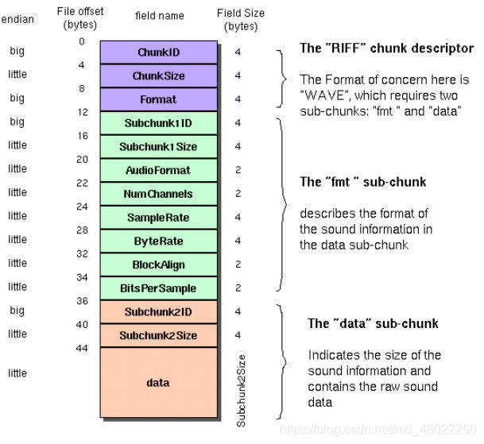

最近了解下wav文件, 记录下wave文件的格式和一些简单的音频处理
wave一般由两部分组成，一部分是头部，一部分是数据

wave文件头部一般如下所示:
| 位置 | 一般内容 | 解释 |
|---|---|---|
| 4 bytes | “RIFF” | 文件类型格式 |
| 4 bytes | filesize | 其值为filesize字段后的大小，真正的文件大小为filesize + 8 bytes |
| 4 bytes | WAVE | 文件格式 |
| 4 bytes | “fmt “ | chunk id,fmt即format，这个chunk保存了音频的采样率、声道数、采样位数等关键信息 |
| 4 bytes | fmt chunk size | fmt chunk的大小，一般有16/18/20/22/40字节 |
| 2 bytes | Audio Format | 编码格式代码 |
| 2 bytes | Num channels | 声道数，一般有1-8 |
| 4 bytes | Sample Rate | 采样率 48000HZ, 44100HZ |
| 4 bytes | Byte Rate | 传输速率，每秒的字节数，计算公式为：采样率channels采样位数/8 |
| 2 bytes | Block Align | 块对齐，告知播放软件一次性需处理多少字节，公式为： 采样位数*声道数/8 |
| 2 bytes | Bits Per Sample | 采样位数，一般有8/16/24/32/64，值越大，对声音的还原度越高 |
| 4 bytes | “data” | data chunk marker |
| 4 bytes | Data Size N | 原始音频数据的大小 |
| N bytes | Data | 原始音频数据，音频数字信号 |
这里说明一下，采样率是一秒钟采样的频率，采样位数除以8等于采样宽度，即需要几个字节凑成一个数字信号（小端序带符号)。
用python实现读取wav文件
1
2
3
4
5
6
7
8
9
10
11
12
13
14
15
16
17
18
19
20
21
22
23
24
25
26
27
28
29
30
31
32
33
34
35
36
37
38
39
40
41
42
43
class MyWave:
def __init__(self, wavpath: str) -> None:
self.wavpath = wavpath
self.wav_fp = open(wavpath, "rb")
self.readheader()
def readheader(self):
"""https://docs.fileformat.com/audio/wav/"""
self.wav_fp.seek(0)
self.file_kind_marker = str(self.wav_fp.read(4), encoding="utf-8")
self.file_size = int.from_bytes(self.wav_fp.read(4), byteorder="little")
self.file_type_header = str(self.wav_fp.read(4), encoding="utf-8")
self.format_chunk_marker = str(self.wav_fp.read(4), encoding="utf-8")
self.length_above_format_data = int.from_bytes(
self.wav_fp.read(4), byteorder="little")
self.format = int.from_bytes(self.wav_fp.read(2), byteorder="little")
self.channels = int.from_bytes(self.wav_fp.read(2), byteorder="little")
self.sample_rate = int.from_bytes(
self.wav_fp.read(4), byteorder="little")
self.byte_rate = int.from_bytes(self.wav_fp.read(4), byteorder="little")
self.block_align = int.from_bytes(
self.wav_fp.read(2), byteorder="little")
self.sample_width = int.from_bytes(
self.wav_fp.read(2), byteorder="little") // 8
self.data_chunk_marker = str(self.wav_fp.read(4), encoding="utf-8")
self.data_size = int.from_bytes(self.wav_fp.read(4), byteorder="little")
def getparams(self):
"""
读取部分参数
"""
return self.channels, self.sample_width, self.sample_rate, self.data_size // self.sample_width
def readframes(self):
"""
读取数据转振幅
"""
self.wav_fp.seek(44)
data = self.wav_fp.read()
fmt = "<i%d" % (self.sample_width)
return np.frombuffer(data, dtype=fmt)